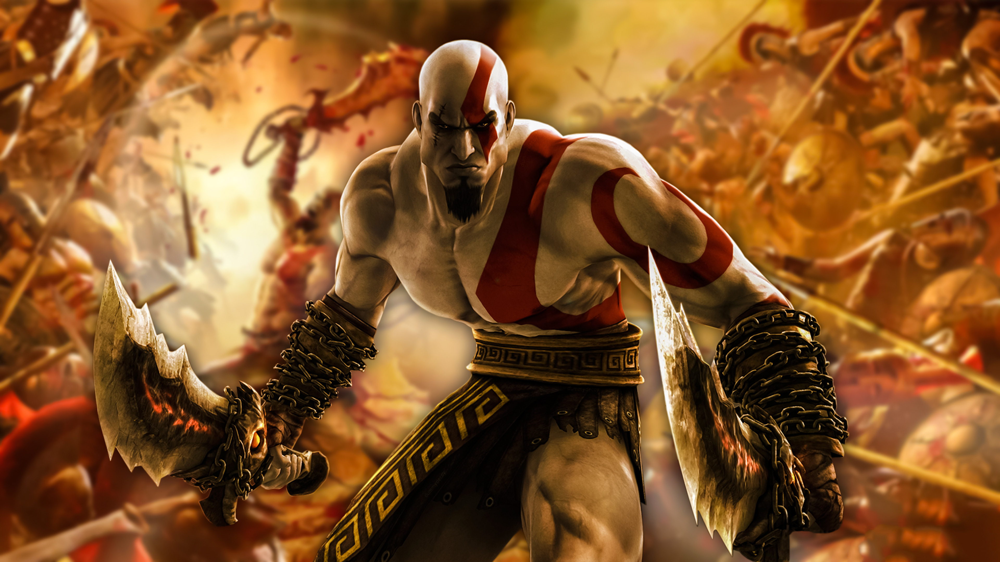
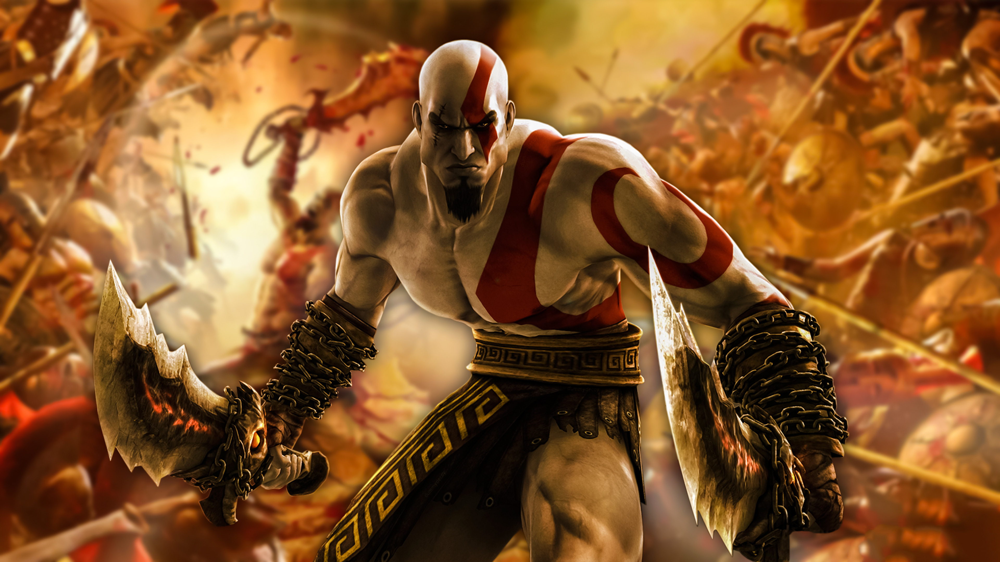

God of War é uma série de jogos eletrônicos de ação-aventura criada por David Jaffe da Santa Monica Studio, da Sony. Iniciada em 2005 no console PlayStation 2 (PS2), tornou-se carro-chefe para a marca PlayStation, consistindo em nove jogos em várias plataformas. Baseada em distintas mitologias, a história segue Kratos, um guerreiro espartano que foi levado a matar sua família por seu antigo mestre, o deus da guerra Ares. Isso desencadeia uma série de eventos que levam às guerras com os panteões mitológicos.
A era da mitologia grega da série mostra Kratos seguindo um caminho de vingança devido às maquinações dos deuses do Olimpo, enquanto a era da mitologia nórdica, que apresenta seu filho Atreus como protagonista secundário, mostra um Kratos mais velho em um caminho de redenção, o que inadvertidamente coloca os dois em conflito com os deuses nórdicos e em busca do impedimento do Ragnarök.
Os títulos da série foram aclamados como alguns dos melhores jogos de todos os tempos. A franquia recebeu diversos prêmios, incluindo vários reconhecimentos de Jogo do Ano para os títulos de 2005 e 2018. Alguns jogos também foram remasterizados para plataformas mais recentes da PlayStation. Até novembro de 2020, a franquia vendeu mais de 51 milhões de unidades em todo o mundo. As fortes vendas e o suporte da série levaram à expansão da franquia para outras mídias, como três séries de quadrinhos e três romances. Uma adaptação cinematográfica do título original estava em desenvolvimento, mas acabou sendo cancelada. Dentre as mercadorias, incluem artes, roupas, brinquedos e réplicas de adereços, bem como trilhas sonoras de jogos, incluindo um álbum de heavy metal, intitulado Blood & Metal (2010), que apresenta músicas originais de várias bandas inspiradas na franquia.


 


Um recorde histórico foi estabelecido por God of War Ragnarök, se tornando o título que mais vendeu em menos tempo entre todos os jogos first party já lançados pela Sony. Em apenas uma semana depois do lançamento, o novo jogo da Santa Monica vendeu 5.1 milhões de cópias.
| GOD OF WAR | (2005) | 94 PONTOS! |
| GOD OF WAR RAGNAROK | (2022) | 94 PONTOS! |
| GOD OF WAR | (2018) | 94 PONTOS! |
| GOD OF WAR II | (2007) | 93 PONTOS! |
| GOD OF WAR III | (2010) | 92 PONTOS! |